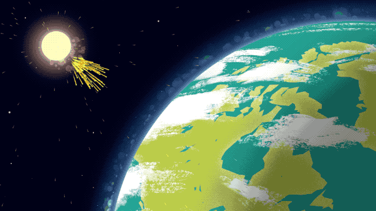

Journey of the Solar Particle
Illustration of sun rays hitting Earth's atmosphere. Source: NASA, giphy.com.
The Journey of the Solar Particle
A simple particle, yes, that is me. My journey began in a solar storm. A coronal mass ejection propelled me into space at an astonishing speed. I was created inside the Sun, among billions of other particles, but now, I am being thrown out into the void.
The Sun is over 150 million kilometers from Earth, and for an object moving thousands of kilometers away...